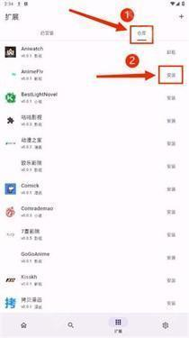

Miru 从零上手：装好扩展、追番、看漫画一条龙
开源聚合媒体客户端 Miru 的完整入门教程——从下载安装、启用官方扩展仓库，到装上第一个扩展、追第一部番剧，带新手绕过最常见的三个坑。
读完这篇，你能在 Windows 上装起 Miru、启用官方扩展仓库、装好至少一个可用的视频源扩展，并且成功搜到并播放一部番剧。
准备：为什么选 Miru 客户端而不是网页版
Miru官网是一个开源的聚合媒体客户端，把视频源、漫画源、小说源都收进一个应用里。它的核心是扩展机制——每个媒体源对应一个 JS 扩展文件，你装什么扩展就能看什么内容。
官方提供了客户端和网页版两种形态，但如果你想长期稳定使用，直接装客户端。网页版受浏览器安全沙箱限制，CORS 跨域拦截几乎让所有视频源的 watch() 方法失效，只能用来测试搜索功能或临时蹭用一下。客户端没有这些限制，扩展能完整跑起来。
前置条件很简单：一台 Windows 电脑、能上网，剩下的就是装 Miru 客户端。你可以去 Miru 的官方渠道下载安装包。

第一步：安装 Miru 客户端
去官方下载拿到 Windows 安装包，双击运行一路下一步就行。安装完成后第一次打开，你会看到左侧分类导航（视频 / 漫画 / 小说），右侧是仓库管理区。别急着点分类，先把扩展仓库启起来——没扩展的 Miru 就是个空壳。
第二步：启用官方扩展仓库
Miru 官方内置了一个扩展仓库，里面收录了社区审核过的扩展。启用后你就能直接浏览和安装，不用自己去网上到处找 JS 文件。
操作步骤：
- 打开 Miru，切换到右侧的"仓库管理"区域；
- 找到"官方仓库"条目，点击它右侧的"启用 / Enable"按钮；
- 等几秒钟，官方仓库下面会列出所有可用扩展，按视频 / 漫画 / 小说分类展示；
- 从里面挑一个你熟悉的视频源扩展，点击扩展右侧的"安装 / Install"按钮；
- 安装好的扩展会出现在"已安装扩展"列表里，状态变成绿色就是就绪了。

这里注意：官方仓库主要收录视频类扩展，漫画和小说源相对少一些。如果你要漫画或小说源，后面可能需要加自定义仓库或导入单独的扩展文件。另外启用仓库不等于自动装扩展，你得逐个挑着装——这是故意设计的，避免默认塞一堆你用不上的源拖慢启动。遇到参数配置或扩展开发这类进阶问题时，去Miru文档翻一下通常能直接找到答案。
第三步：搜索并播放
装好扩展后切回左侧的视频分类，顶部有一个搜索框，输入你想追的番剧名。搜到结果后点进去看详情页，里面会有"播放 / Watch"按钮，点一下就能开播。
如果内置播放器播不出来、或者你本来就习惯用 PotPlayer / VLC，还可以开启外部播放器接管：去 Miru 设置里找到外部播放器选项，指定 PotPlayer 或 VLC 的安装路径，保存后详情页会多出"用外部播放器打开"按钮。不过要注意，外部播放器和 Miru 之间不会同步观看进度——你在 PotPlayer 里看到哪、看了多久，Mirv 不知道，进度不会自动回写。
常见卡点与解法
卡点一：扩展装好了但搜索不出任何内容
先别慌，按这个顺序排查：
- 检查网络能不能正常访问目标媒体源（开代理的情况尤其要注意，有些源在代理下反而访问不了）；
- 去 Miru 设置里看看代理是否已开启，有没有填错端口；
- 确认扩展有没有更新——官方仓库里会显示版本号，已装版本落后会有提示，点一下就能升级；
- 还不行就卸载这个扩展，换一个类似的试试。扩展的稳定性很大程度取决于目标媒体源本身——站点改版、换接口、被墙都会让扩展失效。
卡点二：官方仓库里找不到想要的那个源
官方仓库是社区审核收录的，不一定覆盖你想要的所有站点。这时候就需要自己加自定义仓库，或者直接导入单个扩展 JS 文件。自定义仓库的地址你可以去社区论坛、GitHub Issues 里找，复制进 Miru 的仓库管理区添加即可。
卡点三：视频能搜到但播放时报错
大概率是内置播放器的兼容性问题。直接用外部播放器接管试试——PotPlayer 和 VLC 都原生支持 HLS（.m3u8）格式，而绝大多数视频源用的都是 HLS，基本打开就能播。另外有些视频 URL 带时效性，几小时就过期了，如果外部播放器报"URL 已过期"，回到 Mirv 里重新点一下播放刷新 URL 就行。
进阶：自己写扩展也不难
走到这一步，你已经能正常追番了。往下还能玩什么？Miru 的扩展用 JavaScript 写，每个扩展就是一个 JS 文件，四个核心方法——latest()、search()、detail()、watch()——实现完就能接入一个新的媒体源。写好了想分享给更多人，可以提交到官方仓库，PR 经过社区审核后就能被所有用户看到和安装。当然，如果你只是自己用，直接把 JS 文件丢进 Mirv 的扩展目录就行，不用走 PR 流程。
Miru 的扩展开发指南、PR 流程说明和完整资料，在 GitHub、Gitee、GitCode 三个仓库都有镜像备份，国内访问选 Gitee 或 GitCode 更顺畅。